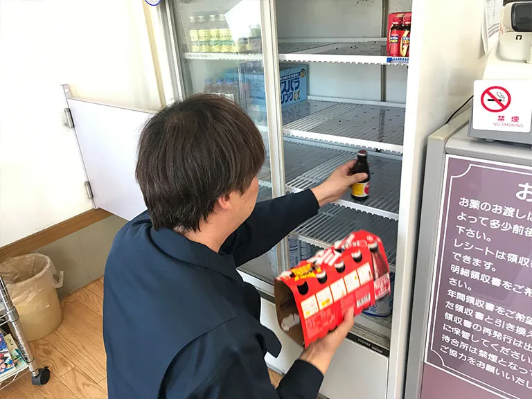
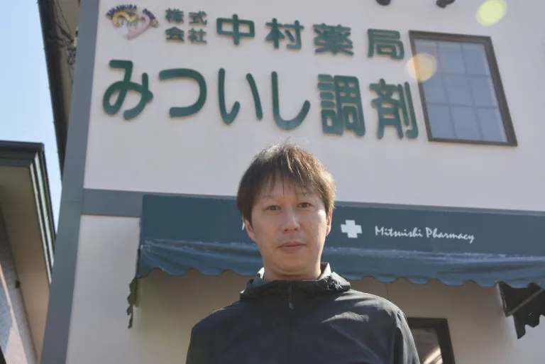

ABOUT THE SHOP
このお店のこと。
地域の薬局としての紹介に加え、三石のキャラクター「こんぶマン」のグッズも掲載されています。暮らしの用事と地域のお土産、二つの視点で知っておきたいお店です。
出会える味、もの、サービス。
旅行中の立ち寄り先として
現サイトでは旅行中の体調不良や水分補給について案内しています。対応内容は店舗にご確認ください。
こんぶマングッズ
地域ならではのグッズ。現在の取り扱い・在庫は要確認です。
PHOTO JOURNAL
写真でのぞく、お店の魅力。


写真は現サイトの店舗紹介から保存したものです。撮影当時の内容で、現在の外観・商品・提供状況とは異なる場合があります。写真を押すと大きく表示します。